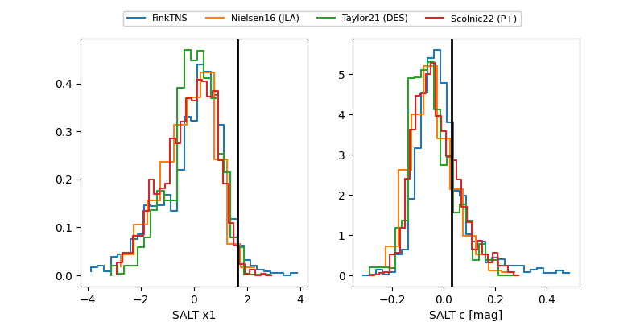

FINK: ZTF25abmxakq
Lasair: ZTF25abmxakq
ALeRCE: ZTF25abmxakq
TNS: 2025wxl
YSE: 2025wxl
ZTF25abmxakq (ztf,fink)
2025wxl (tns,yse)
PSP25O (panstarrs)
equatorial (ra, dec) = (77.5317,+51.38048)
galactic (l, b) = (157.5541,+6.81309)

last atlasc=17.83, atlaso=17.16, ztfg=17.46, ztfr=17.04
2 atlasc, 14 atlaso, 13 ztfg, 21 ztfr detections